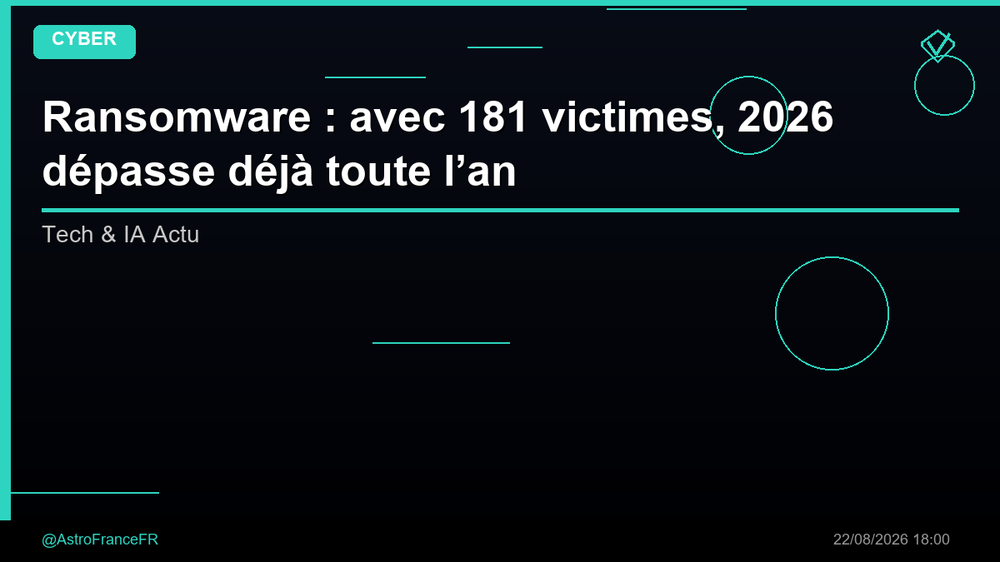

Ransomware : avec 181 victimes, 2026 dépasse déjà toute l’année 2025 - Zataz

🛒 En lien avec cet article
Publicité — Liens de partenariat Amazon : une commission peut être reversée, sans surcoût pour vous.
🔥 Top produits tech du moment
🛒 Voir le prix : Apple Watch Series 10
🛒 Voir le prix : Casque Sony WH-1000XM5
🛒 Voir le prix : Samsung Galaxy S25
🛒 Voir le prix : PlayStation 5
Publicité — Liens de partenariat Amazon : une commission peut être reversée, sans surcoût pour vous.
La cybersécurité est devenue un enjeu majeur pour les entreprises comme pour les particuliers. Chaque semaine, de nouvelles menaces apparaissent et les protections doivent constamment évoluer.
Ce qu'il faut retenir
Ransomware : avec 181 victimes, 2026 dépasse déjà toute l’année 2025 Zataz
Pourquoi c'est important
Cette information souligne l'importance croissante de la sécurité informatique. Elle concerne directement les utilisateurs de technologies numériques et mérite d'être suivie de près dans les prochaines semaines. Ransomware : avec 181 victimes, 2026 dépasse déjà toute l’année 2025 - Zataz est ainsi un signal à prendre en compte pour comprendre les évolutions du secteur.
En résumé
Retenez l'essentiel : Ransomware : avec 181 victimes, 2026 dépasse déjà toute l’année 2025 - Zataz. Cette actualité a été rapportée par Google News Cybersecurite. Nous continuerons de suivre ce sujet et de vous tenir informés des prochaines évolutions.
🚀 Vous êtes freelance tech ?
Calculez votre TJM en 30 secondes : micro-entreprise, SASU, EURL ou portage salarial. Gratuit, taux 2025.
Calculer mon TJM →Source : Google News Cybersecurite